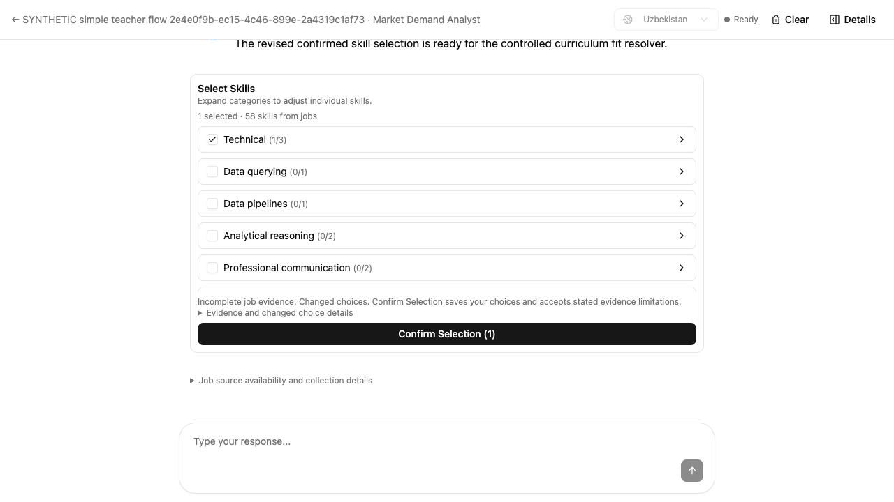
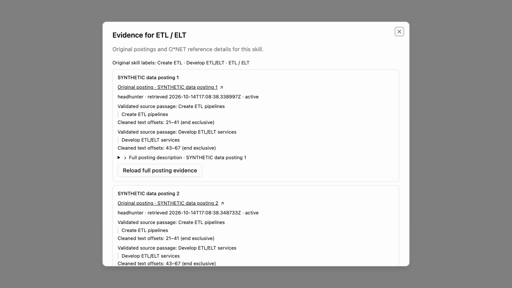
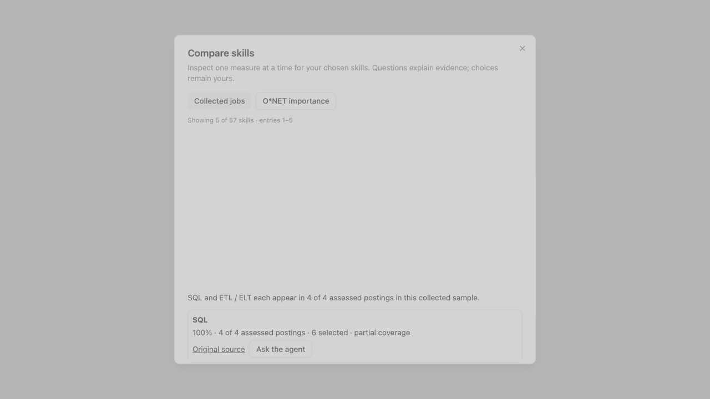

The familiar conversation.
One more job source.
The Swarm page follows the original teacher workflow again. HeadHunter joins LinkedIn and Indeed in the same search; skill choices stay inside the conversation.
The conversation restores, all 41 categories stay in a compact selector, and confirmation remains visible. Your 38 documents and saved SQL/ETL choices are unchanged.
- Choose search terms
- Choose job groups
- Choose skills
- Review curriculum fit

Choose once, adjust freely.
Choosing a category includes all its supported skills, including later pages. Expand it to exclude individual skills. A single Confirm Selection saves those exact choices and continues the existing mapping workflow. Saved categories appear first; rows stay in place while you edit.
Separate draft-saving, reconciliation, and evidence-acknowledgment chores are removed. Final publication still needs the teacher’s approval.
Evidence when you need it.
Job counts open the original posting links and extracted wording. Semantically equivalent skills can share one entry while retaining their distinct sources.
Details opens a compact comparison or O*NET importance reference. O*NET guides the choice using occupation ratings; it does not supply job postings or measure student mastery.
How the three job sources work
New searches configure Indeed, LinkedIn, and HeadHunter together. Available providers run concurrently through the existing collection and extraction workflow. An unavailable source is reported without creating another teacher stage.
| Market tested | Available branches | Current integration limitation |
|---|---|---|
| Uzbekistan | LinkedIn + HeadHunter | Indeed does not support this country in the current integration. |
| USA | Indeed + LinkedIn | The current HeadHunter integration supports Uzbekistan. |
Existing collected analyses retain their saved source settings. The acceptance tests controlled remote provider/model responses; they prove the application flow, not current availability of external services.
Provider workflow evidenceMerging, O*NET and compact charts
All the original evidence survives
On the real Big Data page, the saved ETL/ELT skill contains seven original phrasings, including “Create ETL processes,” and four distinct posting links. The acceptance case independently checks two phrasings and four links. A separate provider case combines six postings into one skill with all six links. Semantic regression checks cover equivalence, translations, unrelated tasks, and saved exclusions.


Small and optional
Comparisons display at most five rows. O*NET importance is shown with its occupation and descriptor, using the 1–5 importance scale. It is not presented as a rating of an unmatched job skill.


Fresh review and the iteration loop
A separate agent started with fresh context, tested the real local UI and API, and rated the result 4 / 5 for simplicity. No material findings remained after the retests.
- Revising choices after curriculum fit now reopens the same checklist; stale fit opens it automatically.
- A completed agent reply keeps choices visible until a real curriculum review exists.
- Long O*NET questions wrap on narrow phones, and Ask returns keyboard focus to the conversation.
- A production check exposed 41 categories overflowing the original one-category fixture. The selector now uses a bounded list, keeps saved categories first, and preserves full evidence in an optional disclosure.
The reviewer retested 41 categories at 1280 × 720, 390 × 844, 375 × 667 and 320 × 667. Heading, count, confirmation and composer stay visible, including with long evidence open. All categories and original links remain keyboard reachable. Optional evidence remains denser than the main flow.
Read the full independent reviewVerification, preservation and release evidence
| Verification | Result |
|---|---|
| Backend | 125 affected workflow/review/provider/approval tests and 52 semantic tests passed. Ruff checks and formatting passed. |
| Frontend | 208 affected tests passed; the four-file core rerun passed all 108 tests. The final layout correction passed 66 page/controller tests. Lint had no errors, and both production builds passed. |
| Actual browser and API | Real authentication, routes, SQL, checkpoints and Neo4j. Category exclusions, atomic confirmation, source collection/extraction, and explicit publication were exercised in disposable courses. |
| Student continuity | Saved learning path, reading resource, quiz answer and mastery stayed identical after publication in the acceptance course. |
| Rejected writes | Stale revisions, wrong-course runs, changed omissions and overlapping choices were rejected with the saved review unchanged. |
| Production | All three Azure apps use pinned release images with settings preserved. Public frontend bytes match the image; backend health and deployed source pass. The signed-in Big Data page restores without Retry. All 38 documents, both saved choices and the unpublished draft are unchanged. |
The complete repository test suite is not claimed green. A broad frontend run encountered timeouts during a concurrent build and an existing node:test/Vitest collection mismatch; the affected files passed the bounded reruns. Twenty-six student graph unit cases were deferred because their fixture configuration was missing; preservation was independently exercised through the actual acceptance workflow. Remote provider and model responses were controlled in these browser tests. Existing build warnings remain.